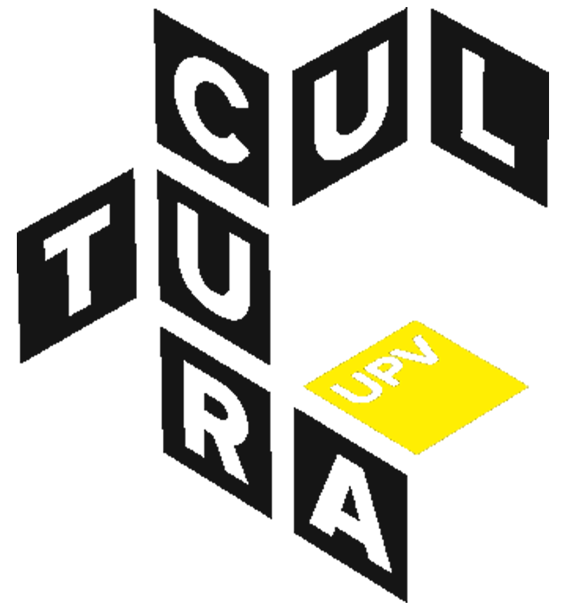
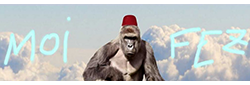

En toda Valencia no encontrarás un diseñador con un perfil más completo. El abanico de servicios que ofrezco, todos ellos ejemplificados en mi galería de proyectos, cubre cualquier necesidad que pueda surgir durante el desarrollo de una campaña gráfica. Diseño gráfico, desarrollo web, edición de vídeo, gráficos móviles, ilustración… Sea cual sea tu proyecto, yo puedo darle cara mejor que nadie.
¿Quieres ver una muestra de mi trabajo? ¡Pásate por mi galería de proyectos, o descarga mi currículum!
Clientes y colaboradores




He colaborado con empresas, instituciones y creadores de contenido para desarrollar campañas, piezas editoriales, identidad visual y material promocional. Aporto ideas, método y ejecución en cada fase del proyecto, adaptándome a la escala y objetivos de cada cliente.